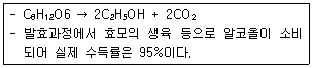

식품기사 (2007-03-04 기출문제)
1과목: 식품위생학
1. 다음 중 감염형 식중독이 아닌 것은?
- 장염비브리오 식중독
- 클로스트리디움 보툴리늄 식중독
- 살모넬라 식중독
- 리스테리아 식중독
(정답률: 75%)

2. 기구 및 용기. 포장의 기준. 규격으로 틀린 것은?
- 식품과 접촉하는 기구 및 용기. 포장의 제조 또는 수리에 땜납을 사용하여서는 아니된다.
- 전류를 직접 식품에 통하게 하는 장치를 가진 기구의 전극은 철, 알루미늄, 백금, 티타늄 및 스테인레스 이외의 금속을 사용하여서는 아니 된다.
- 식품과 접촉하는 면에 인쇄할 때에는 인쇄 후 잔류 톨루엔의 함량이 5mg/m2 이하이어야 한다.
- 기구 및 용기. 포장의 제조시에는 디에틸헥실아디페이트(DEH, 일명 DOA)를 사용하여서는 아니 된다.
(정답률: 87%)
3. 유해 물질에 따른 건강장해가 잘못 연결된 것은 ?
- 수은 - 신경장애질환
- 카드뮴 - 골연화증
- 유기염소제 농약 - 불소증
- 유기인제 농약 - cholinesterase 억압
(정답률: 60%)
4. 생활폐수 오염지표의 일반적인 검사 항목이 아닌 것은 ?
- TSP(Total Suspended Particles)
- SS(Suspended Solids)
- DO(Dissolved Oxygen)
- BOD(Biological Oxygen Demand)
(정답률: 75%)
5. 다음 중 납, 카드뮴 등의 정량에 사용되는 기기는 ?
- Inductively Coupled Particles (ICP)
- Liquid Chromatography (LC)
- Gas Chromatography (GC)
- Polymerase Chain Reaction (PCR)
(정답률: 65%)
6. 미생물의 최저 AW의 한계가 높은 순으로 나열된 것은? (단, 특수세균, 내삼투압성 효모는 제외)
- 세균 > 효모 > 곰팡이
- 효모 > 곰팡이 > 세균
- 곰팡이 > 세균 > 효모
- 효모 > 세균 > 곰팡이
(정답률: 85%)
7. 식품의 살충, 살균 등의 목적으로 사용되는 방사선 중 조사기준이 되는 것은?
- 가시광선
- α선
- β선
- r선
(정답률: 87%)
8. 보존제를 사용하는 목적은?
- 식품의 산회에 의한 변패를 방지
- 식품의 미생물에 의한 부패를 방지
- 식품에 감미를 부여
- 식품의 미생물을 사멸
(정답률: 80%)
9. 다음 중 우리나라에서 식품에 사용이 가능한 타르색소가 아닌 것은?
- 식용색소 적색 제2호
- 식용색소 황색 제4호
- 식용색소 황색 제5호
- 식용색소 녹색 제1호
(정답률: 60%)
10. Q열(Q-fever)의 병원체는?
- Salmonella Pullonum
- Bacillus tuberculosis
- Coxiella burnetii
- Streptococcus lactis
(정답률: 77%)
11. 대장균을 MPN법으로 검사할 때 사용하는 배지의 당은?
- 유당
- 설탕
- 맥아당
- 과당
(정답률: 77%)
12. 바퀴(cockroaches)에 관한 설명 중 틀린 것은?
- 알, 유충, 성충 순으로 발육하는 불완전변태를 한다.
- 가주성(家州性) 바퀴는 어두운 곳에서 무리를 지어 서식한다.
- 식중독 및 경구전염병 등의 질병을 전파한다.
- Warfarin이나 norbromide제등을 사용하여 구제한다.
(정답률: 56%)
13. 노로바이러스(norovirus)에 대한 설명으로 틀린 것은?
- 사람에게 장염을 일으키는 바이러스 그룹이다.
- 현재 노로바이러스에 대한 항바이러스제는 없다.
- 유아는 감염이 잘되나 성인에게는 문제가 되지 않는다.
- 적은 수로도 사람에게 질병을 일으킬 수 있다.
(정답률: 88%)
14. 다음 중 식품영업에 종사할 수 있는 자는?
- 후천성명역결핍증 환자
- 피부병 기타 화농성 질환자
- 콜레라 환자
- 비전염성 결핵 환자
(정답률: 89%)
15. 식품공장에서의 미생물 오염 원인과 그에 대한 대책의 연결이 잘못된 것은?
- 작업복 - air shower
- 작업자의 손 - 자외선등
- 공중낙하균 - clean room 도입
- 포장지 - 무균포장장치
(정답률: 82%)
16. Aflatoxin에 대한 설명으로 틀린 것은?
- Aspergillus속에 의해 생성된 대사 산물이다.
- 급성간장장애를 일으키는 독소이다.
- 사람에게 유독하나 동물은 감수성이 없다.
- 곡류에서 Aflatoxin B1의 허용기준은 10㎍/㎏이하이다
(정답률: 66%)
17. HACCP에 대한 설명으로 틀린 것은?
- 식품위생법에서는 '위해요소중점관리지준'이라고 한다.
- 국제식품규격위원회(CODEX)에 의하면 12단계와 7원칙으로 규정되어 있다.
- HACCP의 주목적은 최종 제품을 검사하여 안전성을 확보하는 것이다.
- 위해분석과 중요관리점으로 구성되어 있다.
(정답률: 84%)
18. 어떤 첨가물의 LD50의 값이 낮을 경우 그 의미는?
- 독성이 약하다.
- 독성이 강하다.
- 보존성이 작다.
- 보존성이 크다.
(정답률: 79%)
19. 식용유지와 유지성 식품 등의 산화방지제로 널리 이용되는 것은?
- dibutyl hydroxy toluene (BHT)
- polyisobutylene
- propylene glycol
- propionic acid
(정답률: 73%)
20. 식중독 발생시 취해야 할 조치로 적절하지 않은 것은?
- 의심되는 모든 식품을 채취하여 역학조사를 실시한다.
- 환자와 상세하게 인터뷰를 하여 섭취한 음식과 증상에 대해서 조사한다.
- 식중독균은 항생제에 대한 내성이 없으므로 환자에게 신속하게 항생제를 투여한다.
- 관련식품의 유통을 금지하여 확산을 방지한다.
(정답률: 96%)
2과목: 식품화학
21. 다음 중 provitamin A가 아닌 것은?(오류 신고가 접수된 문제입니다. 반드시 정답과 해설을 확인하시기 바랍니다.)
- cryptoxanthin
- ergosterol
- ascorbic acid
- tyrosinase
(정답률: 56%)
22. 감자의 껍질을 깍은 뒤 공기 중에 방치하면 갈변되는데, 이 갈변 현상과 가장 관련이 깊은 것은?
- caramel
- maillard
- ascorbic acid
- tyrosinase
(정답률: 80%)
23. 우유에 대한 설명으로 맞는 것은?
- 살균방법 중 고온단시간살균법(HTST)은 130~150℃에서 0.5~5초간 살균하는 것이다.
- 우유에 산을 가하였을 때 침전물이 생기는 것은 유당(lactase)이 응고하기 때문이다.
- 유당 불내증(젖당소화장애증, lactose intolerance)은 락타아제(lactase)가 적게 분비되거나 생성되지 않아서 생긴다.
- 우유의 주된 탄수화물인 젖당은 일반적인 당류 중 감미도가 높고 물에 잘 용해되어 아이스크림 제조에 많이 이용된다.
(정답률: 76%)
24. 식이섬유에 대한 설명으로 틀린 것은?
- 식이섬유에는 리그닌(lignin), 셀룰로오스(cellulose), 펙틴(pectin), 헤미셀룰로오스(hemicellulose)등이 포함된다.
- 사람의 소화효소로는 소화되지 않고 몸 밖으로 배출되는 고분자 탄수화물이다.
- 정장작용을 도와 변비를 예방하고 대변의 배설을 돕는다.
- 불용성 섬유질은 칼슘, 철분, 아연 등 무기질의 흡수를 촉진시키므로 많이 섭취하는 것이 좋다.
(정답률: 77%)
25. 표면 장력과 관련된 성질을 설명한 것 중 틀린 것은?
- 공기-액체 계면에 자리 잡은 분자들은 불균형한 인력을 받아 액체 내부 쪽으로 끌리게 된다.
- 여러 분자들이 액체의 표면을 떠나 내부 쪽으로 향하려는 경향이 있어 표면을 수축하려고 한다.
- 표면에 작용하는 인력을 표면 장력이라고 하며 단위는 N/m2으로 표시한다.
- 표면 활성제는 극성부분과 비극성부분을 함께 가진 양쪽 친매성 분자이다.
(정답률: 65%)
26. 유화제 분자 내의 친수기와 소수기의 균형을 나타내는 것은?
- HLB
- HPLC
- acetyl value
- Hener value
(정답률: 86%)
27. 밥을 냉장고에 여러 시간 보관하였다가 먹으면 더운밥에 비하여 맛이 없어지는데, 그 주된 이유는?
- 밥이 호화되기 때문이다.
- 밥이 노화되기 때문이다.
- 밥이 수분을 많이 흡수하기 때문이다.
- 밥의 점도가 증가하기 때문이다.
(정답률: 85%)
28. 콜로이드(colloid)의 설명으로 옳은 것은?
- Sol 상태는 분산매가 고체이고 분산상이 액체이다.
- Gel 상태는 소량의 분산상 입자들 사이에 다량의 분산매가 있어 유동성이 있는 것이다.
- Gel 입자가 응집하여 침전된 것이 Sol 이다.
- Gel이 건조 상태가 된 것을 xerogel이라 한다.
(정답률: 59%)
29. 성인이 하루에 단백질 75g, 지질 40g, 당질533g을 섭취하였을 경우 발생하는 칼로리를 Atwater 계수를 이용하여 구하면?
- 3071kcal
- 2850kcal
- 2792kcal
- 2513kcal
(정답률: 62%)
30. 사과를 공기 중에 두면 갈변 현상이 생기는데, 이에 관여하는 효소에 대한 설명으로 잘못된 것은?
- 일반적으로 polyphenoloxidase가 관여하여 polyphenol류를 산화시킨다.
- caramel화 반응에도 관여하여 환원당의 갈변을 일으킨다.
- 구리이온(Cu2+)에 의해서 활성화되며 염소이온(Cl-)에 의해서 억제된다.
- 감의 경우에는 효소가 감의 tannin과 결합하여 불활성화되므로 거의 갈변되지 않는다.
(정답률: 46%)
31. 달걀을 높은 온도에서 긴 시간 가열하면 난황 주위가 청록색으로 변색 되는데 그 이유로 가장 적합한 것은?
- 비타민 C가 산화되어 노른자의 철(Fe)과 결합하기 때문
- 열에 의하여 탄닌(tannin)이 분해되어 철(Fe)이 형성되기 때문
- 달걀 흰자의 황화수소(H2S)가 노른자의 철(Fe)과 결합하여 황화철(FeS)을 생성하기 때문
- 단백질의 구성성분인 질소가 산화되기 때문
(정답률: 88%)
32. 다음 중 식물성 유독성분이 아닌 것은?
- saponin
- solanine
- venerupin
- ricin
(정답률: 72%)
33. 다음 중 단순지질은?
- phosphatide
- glycolipid
- sulfolipid
- triglyceride
(정답률: 62%)
34. 육류를 주식으로 하는 서양인과 달리 곡류를 주식으로 하는 동양인에게서 결핍되기 쉬운 필수 아미노산은?
- 라이신(lysine)
- 아스파라긴(asparagine)
- 글루타민산(glutamic acid)
- 알라닌(alanine)
(정답률: 64%)
35. Aspergillus속 배양물에서 얻어지는 효소로, 식물세포막 구성 성분 사이의 결합을 분리 또는 약화시켜 식물조직을 연화시키는 작용을 하는 것은?
- pepsin
- pectinase
- isoamylase
- α-amylase
(정답률: 61%)
36. 다음 성분 중에서 난황 속에 가장 많이 들어 있는 것은?
- 단백질
- 지질
- 탄수화물
- 무기질
(정답률: 59%)
37. 자당(sucrose)을 포도당(glucose)과 과당(fructose)으로 가수분해하는 효소는?
- Kinase
- Aldolase
- Enolase
- Invertase
(정답률: 85%)
38. 세사몰(sesamol)이 들어 있는 식품과 그 작용은?
- 콩기름 – 보존료제제
- 땅콩기름 - 착향료
- 들기름 – 방부제
- 참기름 - 항산화제
(정답률: 73%)
39. 단백질이 변성되면 어떠한 성질을 나타내는가?
- 소화 분해력 감소
- 친수성 증가
- 용해도의 감소
- 반응성 감소
(정답률: 53%)
40. 유기산의 이름이 잘못 짝지어진 것은?
- 호박산 : isoamylic acid
- 사과산 : malic acid
- 주석산 : tartaric acid
- 구연산 : citric acid
(정답률: 60%)
3과목: 식품가공학
41. 유지의 경화에 대한 설명으로 틀린 것은?
- 불포화지방산을 포화지방산으로 만드는 것이다.
- 쇼트닝. 마가린 등이 대표적인 제품이다.
- 산화와 풍미변패에 대한 저항력을 높여준다.
- 질소첨가반응으로 융점을 낮추어준다.
(정답률: 67%)
42. 햄을 가공할 때 정형한 고기를 혼합염(식염, 질산염 등)으로 염지하지 않고 가열하면 어떻게 되는가?
- 결착성과 보수성이 발현된다.
- 탕성을 가지게 된다.
- 형이 그대로 보존된다.
- 조직이 뿔뿔이 흩어진다.
(정답률: 86%)
43. 대두 단백질에 대한 설명으로 잘못된 것은?
- 글로불린(globulin)에 속하는 글리시닌(glycinin)이 주요 성분이다.
- 필수아미노산 중 리신(lysine), 루신(leucine)의 함량이 높으며 메티오닌(methionine)과 트립토판(tryptophan) 등 함황아미노산의 함량이 부족하다.
- 안티트립신(antitrypsin)은 트립신(trypsin)의 소화작용을 방해한다.
- 헤마글루타닌(hemaglutinin)은 적혈구의 응고를 방해한다.
(정답률: 63%)
44. 계란 중의 콜레스테롤 함량을 낮추는 방법으로 부적합한 것은?
- 난황으로부터 콜레스테롤을 용매 추출한다.
- 시료의 배합을 조절하여 계란에 콜레스테롤 함량이 낮도록 한다.
- 계란을 가열처리 한다.
- 난백과 난황을 분리하여 난황에 있는 지방을 제거한다.
(정답률: 86%)
45. 탈기의 방법에 대한 설명으로 틀린 것은?
- 기계적 탈기는 점성식품을 채우고 탈기하는 경우에 가장 적합하다.
- 가스주입법은 불활성 가스를 head space에 주입하여 기존 공기를 제거하는 방법이다.
- 수증기주입법은 많은 공기가 혼입되어 있어 수증기의 자유로운 통과를 방해하는 식품에는 적당하지 않다.
- 가열탈기의 가열효과는 통조림 통내 식품에 갇힌 공기나 가스를 제거하여 상부 공간에 존재하는 공기를 수증기와 대체하는 것이다.
(정답률: 48%)
46. 일반적인 CA저장을 설명한 것으로 가장 옳은 것은?
- 초기에 가스를 주입하거나 내용물 자체에 의해 발생하는 가스를 조절하지 않고 방치하는 방법이다.
- 저장수명에 저해되는 에틸렌이 발생하는 문제가 있다
- 산소, 이산화탄소, 질소 등의 비율을 계속 측정하여 부족한 성분을 공급하는 장치가 필요하다.
- 플라스틱 필름이나 저장상자 등 20Kg이하의 소포장단위에 매우 적합하다.
(정답률: 76%)
47. 육연화제에 사용되는 효소로 가장 부적합한 것은?
- 파파인(papain)
- 피신(ficin)
- 브로멜린(bromelin)
- 리파아제(lipase)
(정답률: 78%)
48. 식품공정상 액상포도당의 D.E(포도당 당량) 규격은?
- 40.0 이하
- 60.0 이하
- 70.0 이상
- 80.0 이상
(정답률: 50%)
49. 아미노산 간장 제조에 사용되지 않는 것은?
- 코오지
- 탈지대두
- 염산용액
- 수산화나트륨
(정답률: 67%)
50. 발효유에 사용되는 starter는?
- 고초균
- 유산균
- 장구균
- 황국균
(정답률: 77%)
51. 신선한 식품을 냉장고에 저온저장하면 저장기간을 연장할 수 있는데, 저온저장의 효과가 아닌 것은?
- 미생물의 발육 속도를 느리게 한다.
- 저온균을 살균한다.
- 호흡 작용 속도를 느리게 한다.
- 효소 및 화학 반응 속도를 느리게 한다.
(정답률: 82%)
52. 유지의 정제 과정에 대한 설명으로 맞는 것은?
- 알칼리정제(alkali refining) : 가열 또는 흡착제를 이용하여 바람직하지 못한 착색물질 제거
- 표백(bleaching) : 유리지방산을 중화시켜 비누층을 제거
- 저온처리(winterization) : 고온, 감압처리로 바람직하지 못한 냄새 제거
- 탈검(degumming) : 끓는 물 또는 수증기로 처리하여 lecithin등을 제거
(정답률: 55%)
53. 마요네즈의 설명으로 잘못된 것은?
- 마요네즈는 유백색이며, 기포가 없고 내용물이 균질하여야 한다.
- 식용유의 입자가 큰 것일수록 점도가 높고 안정도도 크다.
- 유탁의 조직 점도와 함께 조미료와 향신료의 배합에 의한 풍미는 마요네즈의 품질을 좌우한다.
- 마요네즈는 oil in water(O/W)의 유탁액이다.
(정답률: 73%)
54. Clostridium botulinum 포자현탁액을 121.1℃에서 열처리하여 초기농도의 99.999%를 사멸시키는데 1.2분이 걸렸다. 이포자의 D121.1은 얼마인가?
- 0.28분
- 0.24분
- 1.00분
- 2.24분
(정답률: 47%)
55. 다음 중 대류형 건조기(convection type dryer)에 해당되지 않는 것은?
- 트레이 건조기(tray dryer)
- 터널 건조기(tunnel dryer)
- 드럼 건조기(drum dryer)
- 컨베이어 건조기(conveyor dryer)
(정답률: 60%)
56. 우유의 조지방 시험에 사용되는 것은?
- 질소 증류장치
- 겔벨 유지계
- 전기로
- 세미마이크로 켈달질소분해장치
(정답률: 45%)
57. 통조림 검사에서 flat sour의 특징이 아닌 것은?
- 가스의 생성 없이 산을 생성한다
- 주로 살균부족에 의하여 발생하나, 밀봉불량에 의해서 발생할 수도 있다.
- 관(罐)을 개관해야 변패관을 알 수 있다.
- 타검에 의해 식별이 쉽다.
(정답률: 64%)
58. 7분도미는 현미에서 몇%의 백미를 생산하는가?
- 100%
- 96.6%
- 94.4%
- 93.0%
(정답률: 59%)
59. 정미의 도정률(정백률)은?
- (현미량/정미량)×100
- (정미량/현미량)×100
- (탄수화물량/현미량)×100
- (현미량/탄수화물량)×100
(정답률: 79%)
60. 통조림 내에서 가장 늦게 가열되는 부분으로 가열살균 공정에서 오염미생물이 확실히 살균되었는가를 평가하는데 이용되는 것은?
- 온점
- 냉점
- 비점
- 정점
(정답률: 82%)
4과목: 식품미생물학
61. 복제상의 실수와 돌연변이 유발물질에 의한 염기변화를 수선(repair)하는 DNA 수선의 방법이 아닌 것은?
- excision repair
- recombination repair
- mismatch repair
- UV repair
(정답률: 65%)
62. 균사에 격막(septa)이 없는 Rhizopus 속과 Mucor 속의 곰팡이는 분류상 어디에 속하는가?
- 접합균류(Zygomycetes)
- 자낭균류(Ascomycetes)
- 담자균류(Basidiomycetes)
- 불완전균류(Deuteromycetes)
(정답률: 41%)
63. 포도당을 과당으로 전환시킬 때 사용되는 미생물과 효소는?
- Bacillus subtilis - protease
- Streptomyces olivacecus - glucose isomerase
- Aspergillus niger - cellulase
- Saccharomyces cerevisiae - zymase
(정답률: 74%)
64. 다음 중 맥주산업에 사용되는 상면발효 효모는?
- Saccharomyces cerevisiae
- Zygosaccharomyces rouxii
- Saccharomyces uvarum
- Saccharomyces servazzii
(정답률: 85%)
65. β-lactame계 항생제로 세포벽(peptidoglycan)합성을 저해하는 것은?
- Macrolides
- Tetracyclines
- Penicillins
- Aminoglycosides
(정답률: 86%)
66. 산소요구성에 따른 미생물의 분류에서 산소의 유무에 관계없이 생육하는 균으로 호기적 상태에서는 산화적 대사를 혐기적 상태에서는 발효에 의해서 에너지를 획득하는 것은?
- 편성호기성균
- 미호기성균
- 통성혐기성균
- 편성혐기성균
(정답률: 73%)
67. 파아지(phage)에 대한 대책으로 적합하지 않은 것은?
- 연속교체법(rotation system)을 이용한다.
- 살균을 철저하게 한다.
- 내성균주를 사용하여 발효를 한다.
- 생산균주를 1종으로 제한한다.
(정답률: 70%)
68. 다음 중 미생물의 아미노산 생합성과 관계없는 효소는?
- Glutamic dehydrogenase
- Isocitrate lyase
- Aspar tase
- Transaminase
(정답률: 30%)
69. Schizosaccharomyces속 효모의 주된 무성 생식방법은?
- 감수분열(meoosis)
- 이분법으로 분열(fission)
- 양극출아법으로 분열(bipolar budding)
- 다극출아법으로 분열(multilateral budding)
(정답률: 42%)
70. Saccharomycers cerevisiae를 12시간 배양한 결과, 균수가 2에서 128로 증가할 때 세대수와 평균 세대시간은?
- 세대수 = 64, 평균 세대시간 = 20분
- 세대수 = 7, 평균 세대시간 = 2시간
- 세대수 = 6, 평균 세대시간 = 2시간
- 세대수 = 5, 평균 세대시간 = 3시간
(정답률: 79%)
71. 사상균에서 발견되며 식품의 갈변방지, 통조림 산소제거 등에 이용되는 효소는?
- protease
- catalase
- lysozyme
- glucose oxidase
(정답률: 60%)
72. 발효 미생물의 일반적인 생육곡선에서 정상기(정지기,stationary phase)에 대한 설명으로 잘못된 것은?
- 균수의 증가와 감소가 같게 되어 균수가 더 이상 증가 하지 않게 된다.
- 전 배양기간을 통하여 최대의 균수를 나타낸다.
- 세포가 왕성하게 증식하며 생리적 활성이 가장 높다.
- 정상기 초기는 세포의 저항성이 가장 강한 시기이다.
(정답률: 68%)
73. 조류(algae)에 대한 설명으로 틀린 것은?
- 엽록소를 가지는 광합성 미생물이다.
- 남조류를 포함하여 모든 조류는 진핵세포 구조로 되어 있어 고등미생물에 속한다.
- 갈조류와 홍조류는 조직분화를 볼 수 있는 다세포형이다.
- 녹조류인 클로렐라는 단세포 미생물로 단백질 함량이 높아 미래의 식량으로 기대되고 있다.
(정답률: 66%)
74. UAG, UAA, UGA codon에 의하여 mRNA가 단백질로 번역될 때 peptide 합성을 정지시키고 야생형보다 짧은 polypeptide 사슬을 만드는 변이는?
- Missense mutation
- Induced mutation
- Nonsense mutation
- Frame shift mutation
(정답률: 53%)
75. 간장의 발효 및 숙성과정에서 소금과 젖산 때문에 차츰 도태되는 것은?
- Zygosaccharomyces rouxii
- Candida versatilis
- Bacillus subtilis
- pediococcus halophilus
(정답률: 41%)
76. 다음 중 젖산 발효와 관련이 없는 것은?
- Streptococcus 속
- Lactobacillus 속
- Leuconostoc 속
- Microccus 속
(정답률: 65%)
77. 원핵세포의 구조적 특징이 아닌 것은?
- DNA가 존재하는 곳에 특정한 막이 없다.
- 세포벽이 있다.
- 유사분열을 볼 수 있다.
- 세포에 따라 운동성 기관인 편모가 존재한다.
(정답률: 45%)
78. Penicillium속이 Aspergillus속과 형태상 다른 점에 대한 설명으로 맞는 것은?
- 기저경자(metulae)가 있다.
- 정낭(vesicle)이 없다.
- 분생포자(canidia)가 없다.
- 분생자병에 병족세포가 있다.
(정답률: 53%)
79. 대부분 무성생식을 하며 주로 출아법(Budding)에 의하여 증식하는 진균류로 빵, 맥주, 포도주 등을 만드는데 사용되는 것은?
- 세균(Bacteria)
- 곰팡이(Mold)
- 효모(Yeast)
- 바이러스(Virus)
(정답률: 82%)
80. 진핵세포의 소기관에 대한 설명으로 옳은 것은?
- 세포막은 세포소기관을 포함하며 원핵세포의 세포막보다 더 다양한 기능을 갖는다.
- 조면소포체는 주로 단백질 합성이 일어나는 장소이며, 활면소포체는 지방을 합성하는 장소이다.
- 미토콘드리아의 내막에서는 TCA와 지방의 산화가 일어난다.
- 골지체는 생명활동에 필요한 대부분의 유전정보(DNA)를 수용하고 rRAN를 합성하는 중심장소이다.
(정답률: 27%)
5과목: 생화학 및 발효학
81. 전자전달계에 대한 설명으로 틀린 것은?
- NADH dehydrogenase에 의해 NADH로부터 2개의 전자를 수용하여 FMN에 전자를 전달함으로써 개시된다.
- Flavoprotein(FeS)은 전자를 수용하여 Fe3+를 Fe2+로 환원시킨다.
- 전자전달의 결과 ADP와 Pi로부터 총 5개의 ATP가 합성된다.
- 최종 전자수용체인 산소는 물로 환원된다.
(정답률: 54%)
82. 유기물을 호기성 분해할 때의 대표적인 최종 산물은?
- 물과 이산화탄소
- 물과 메탄
- 메탄과 일산화탄소
- 물과 황화수소
(정답률: 87%)
83. 광합성의 명반응(light reaction)에서 생성되어 암반은(dark reaction)에 이용되는 물질은?
- ATP
- NADH
- O2
- pyruvate
(정답률: 58%)
84. Fusel oil의 주요 성분이 아닌 것은?
- isoamyl alcohol
- isobutyl alcohol
- methyl alcohol
- n-propyl alcohol
(정답률: 71%)
85. 단백질 합성시 anti codon site를 갖고 있어 mRNA에 해당하는 아미노산을 운반해주는 것은?
- DNA
- rRNA
- operon
- tRNA
(정답률: 74%)
86. 기본적인 결합양식은 peptide bond(-CO-NH-)이며, 이들 사이의 공유 결합에 의하여 안정된 결합구조를 갖는 단백질 기본구조는?
- 1차 구조
- 2차 구조
- 3차 구조
- 4차 구조
(정답률: 43%)
87. 효소의 분류에 따른 기능이 잘못 연결된 것은?
- transferases - 관능기의 전이를 촉매
- lyases - 비가수분해로 화학기의 이탈 반응을 촉매
- isomerases - 산화환원반응을 촉매
- ligases - ATP를 분해시켜 화학결합을 형성하는 반응을 촉매
(정답률: 40%)
88. 글리코겐의 분해(glycogenolysis)경로를 'cascade sequence'라고 하는 이유로 가장 적합한 것은?
- 스트레스를 받으면 adrenaline이 분비되어 분해 반응이 역방향으로 일어나므로
- phosphorylase kinase의 활성이 폭발적으로 일어나 아주를 빠른 속도로 분해가 진행되므로
- glycogen이 glucose 1-phosphate로 분해되는 과정이 여러 효소에 의해 순차적으로 이루어지므로
- 분해 과정에서 많은 glucose가 여러 개의 가지로부터 한꺼번에 유리되므로
(정답률: 63%)
89. TCA 회로의 조절효소(pacemaker enzyme)와 가장 거리가 먼 것은?
- citrate synthase
- isocitrate dehydrogenase
- α-ketoglutarate dehydrogenase
- phosphoglucomutase
(정답률: 50%)
90. 효모에 의한 알코올발효의 반응식과 조건이 아래와 같을때 포도당 1Kg으로부터 생산되는 알코올은?

- 약440g
- 약460g
- 약486g
- 약511g
(정답률: 58%)
91. 다음 중 석유계 탄화수소를 이용한 균체 생산에 가장 적합한 효모는?
- Pseudomonas aeruginosa
- Candida tropicalis
- Saccharomyces cerevisiae
- Saccharomyces carlsbergensis
(정답률: 59%)
92. 미카엘리스 상수(Michaelis constant) Km의 값이 낮은 경우는 무엇을 의미하는가?
- 효소와 기질의 친화력이 크다.
- 효소와 기질의 친화력이 작다.
- 기질과 저해제가 경쟁한다.
- 기질과 저해제가 결합한다.
(정답률: 74%)
93. Cholesterol에 대한 설명으로 잘못된 것은?
- 노화된 엽록소에 많이 함유되어 있다.
- 인체는 하루에 1.5 ~ 2.0g 정도를 합성한다.
- 담즙산염의 전구체로 작용한다.
- 비타민D, 성호르몬 등의 합성에 관여한다.
(정답률: 68%)
94. 구연산(citric acid)을 제조하는 방법 중 발효법에 이용되는 것은?
- ethyl isovalerate
- Brevibacterium속
- phenylacetic acid
- Aspergillus niger
(정답률: 65%)
95. 산화적 인산화 반응(oxidative phosphorylation)에서 ATP가 합성되는 과정과 가장 거리가 먼 것은?
- NADH dehydrogenase/flavoprotein 복합체
- cytochrome a/a3복합체
- fatty-acid synthetase 복합체
- cytochrome oxidase 복합체
(정답률: 57%)
96. 핵산을 구성하는 염기의 성분으로 틀린 것은?
- A – adenine
- T - thymine
- U – uracil
- C - cytochrome
(정답률: 74%)
97. 다음 중 미생물 발효로 생산하는 아미노산이 아닌 것은?
- L-Cystine
- L-Arginine
- L-Valine
- L-Tryptophan
(정답률: 46%)
98. 비타민 B12에 대한 설명으로 틀린 것은?
- co2+이온을 함유하고 있는 적색의 비타민이다.
- 부족하면 거대적아구성 빈혈을 일으킨다.
- 자연계에서는 동물만 합성할 수 있다.
- 구조가 복잡하고 이성체가 있다.
(정답률: 70%)
99. 다음 중 당이 혐기적 조건에서 효소에 의해 분해되는 대사작용으로 세포질에서 일어나는 것은?
- 해당작용
- 유전정보 저장
- 세포의 운동
- TCA회로
(정답률: 66%)
100. purine의 분해대사 중 uric acid의 생성에 대한 설명으로 틀린 것은?
- guanine은 xanthine으로 분해된다.
- 사람은 uric acid를 오줌으로 배설한다.
- xanthine은 xanthine oxdase에 의한 산화반응으로 adenine이 된다.
- 혈액내 uric acid 농도가 상승하면 관절병인 통풍이 생긴다.
(정답률: 49%)